MEET THE UPPER EAST SIDE
Personajes principales
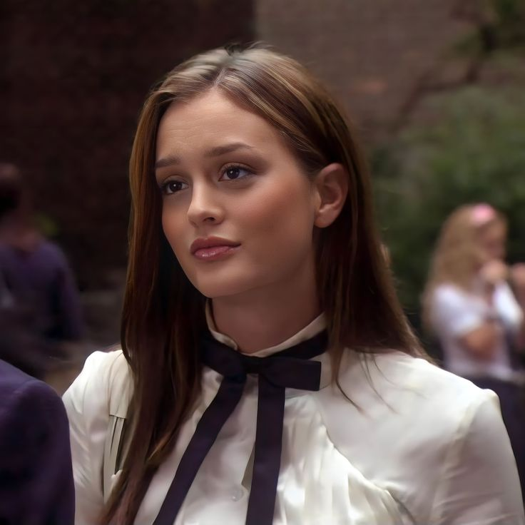
Blair Waldorf
Blair
Reina del Upper East Side, ambiciosa, inteligente y el ícono absoluto del estilo.
Leighton Meester
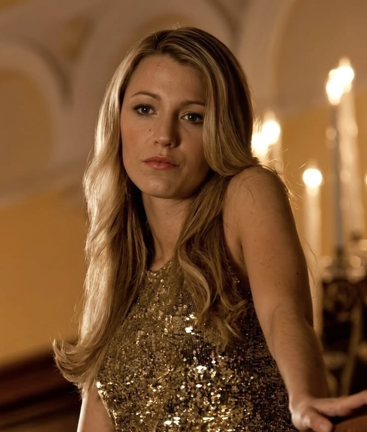
Serena van der Woodsen
Serena
Carismática, espontánea y el centro de todos los rumores.
Blake Lively
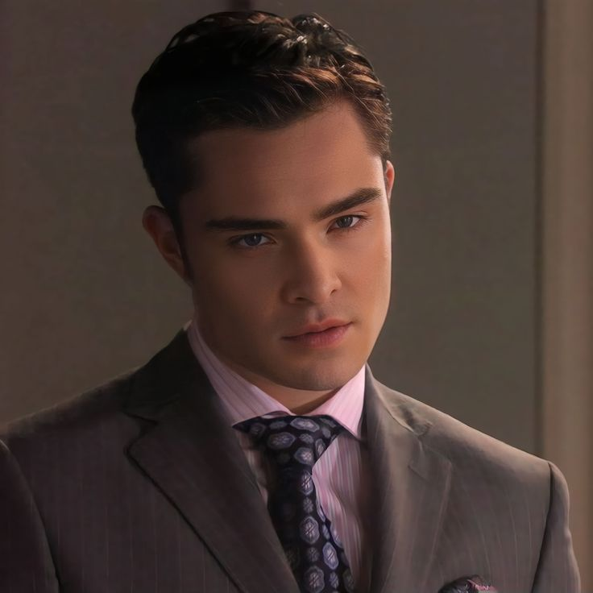
Chuck Bass
Chuck
Heredero del Empire Hotel y uno de los personajes más complejos.
Ed Westwick
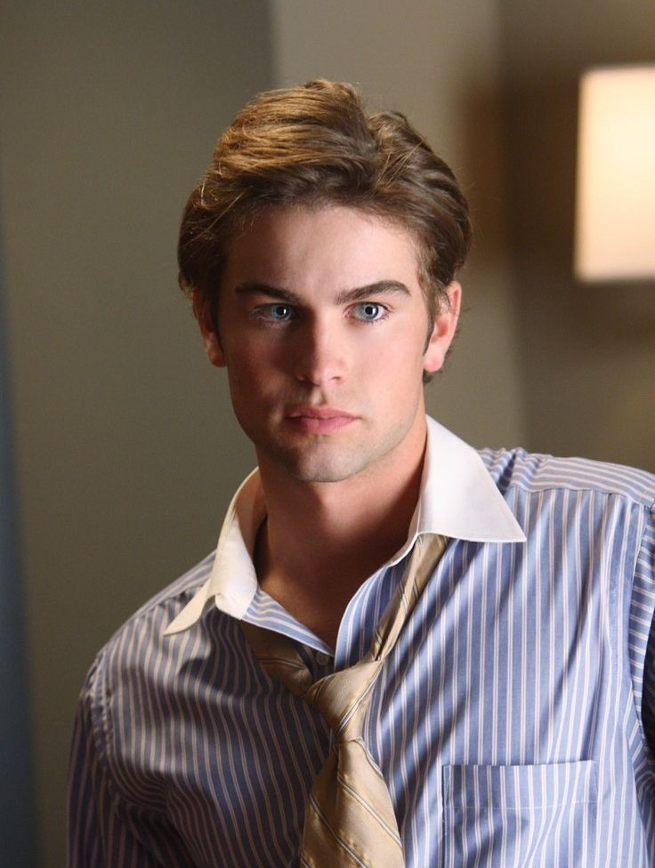
Nate Archibald
Nate
El chico dorado del Upper East Side, siempre dividido entre dos mundos.
Chace Crawford
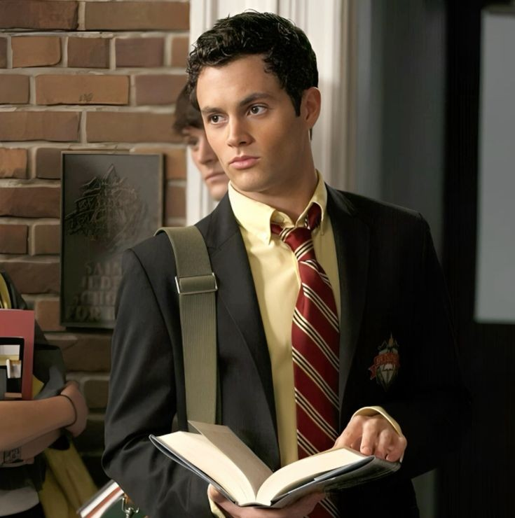
Dan Humphrey
Dan
Un chico de Brooklyn que termina cambiando la historia del Upper East Side.
Penn Badgley
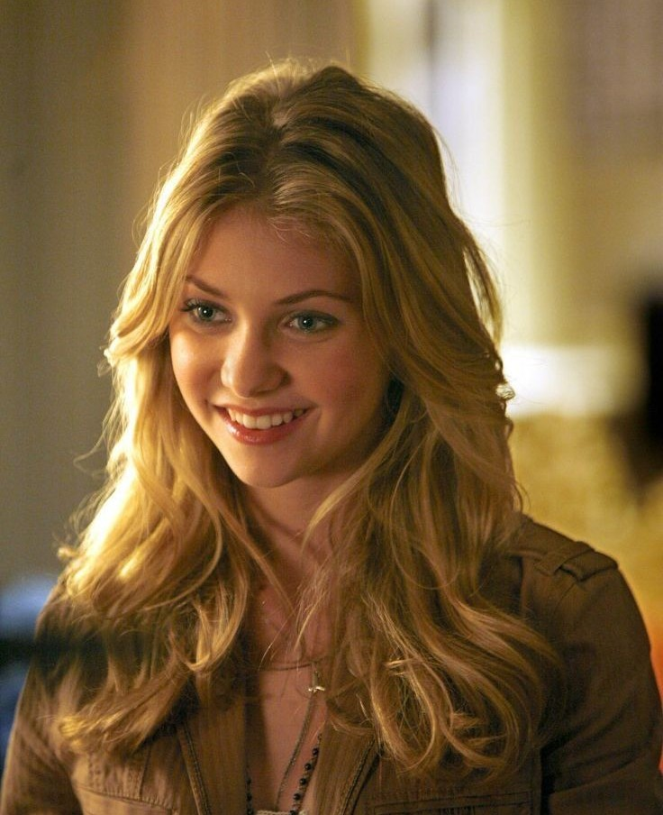
Jenny Humphrey
Jenny
Su deseo de pertenecer la convierte en una de las mayores rivales de Blair.
Taylor Momsen
THE REST OF THE UPPER EAST SIDE
Personajes secundarios
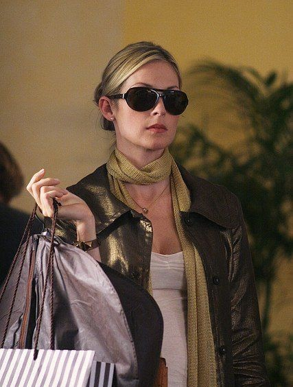
Lily Van der Woodsen
Lily
Madre de Serena y Eric. Es una figura clave de la alta sociedad.
Kelly Rutherford
Rufus Humphrey
Rufus
Ex músico y padre de Dan y Jenny.
Matthew Settle
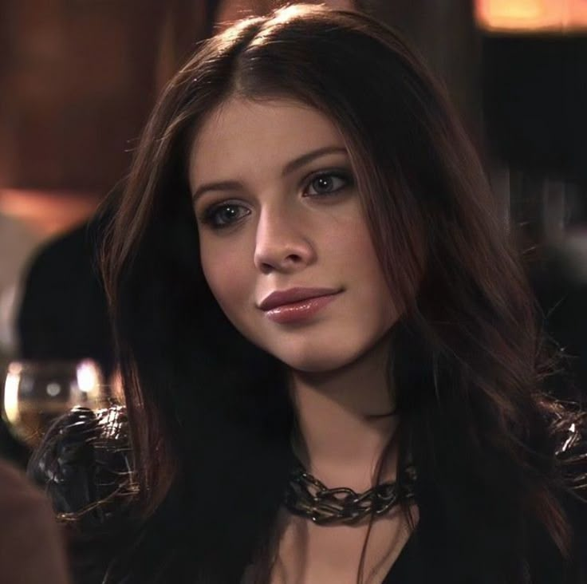
Georgina Sparks
Georgina
Manipuladora e impredecible, siempre vuelve con un secreto.
Michelle Trachtenberg
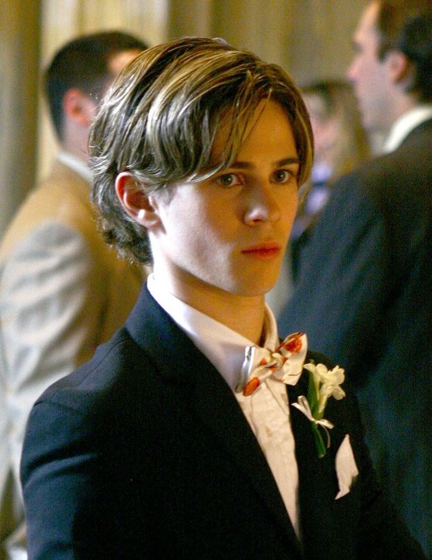
Eric Van der Woodsen
Eric
El hermano menor de Serena y uno de los personajes más nobles.
Connor Paolo
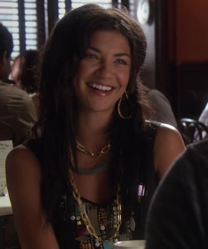
Vanessa Abrams
Vanessa
Representa el mundo de Brooklyn y la mirada más realista.
Jessica Szohr
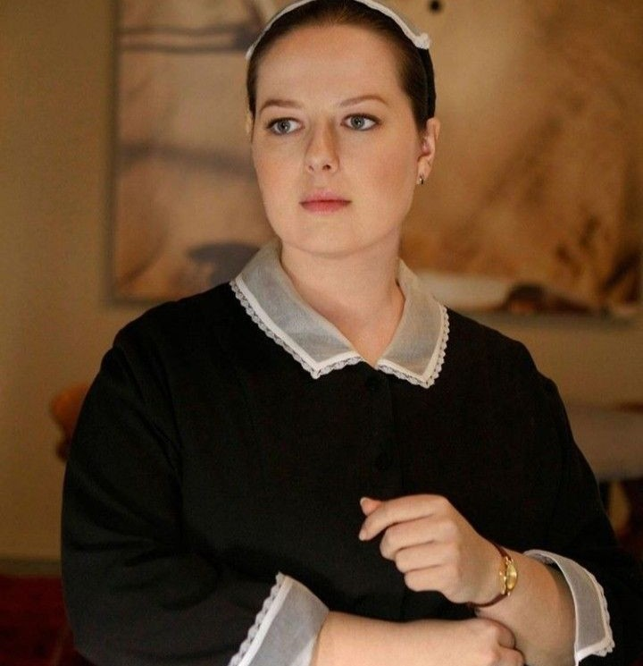
Dorota Kishlovsky
Dorota
La persona que mejor conoce a Blair.
Zuzanna Szadkowski
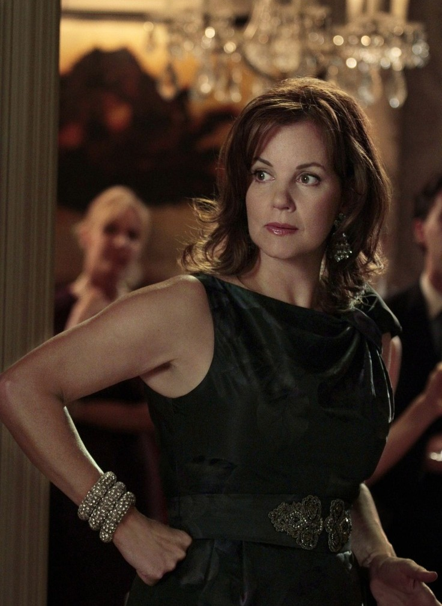
Eleanor Waldorf
Eleanor
Diseñadora de moda y madre de Blair.
Margaret Colin
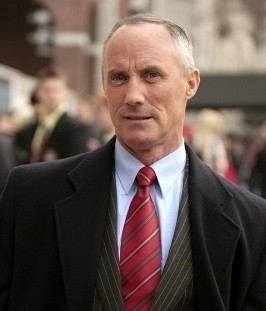
Bart Bass
Bart
Empresario y padre de Chuck Bass.
Robert John Burke
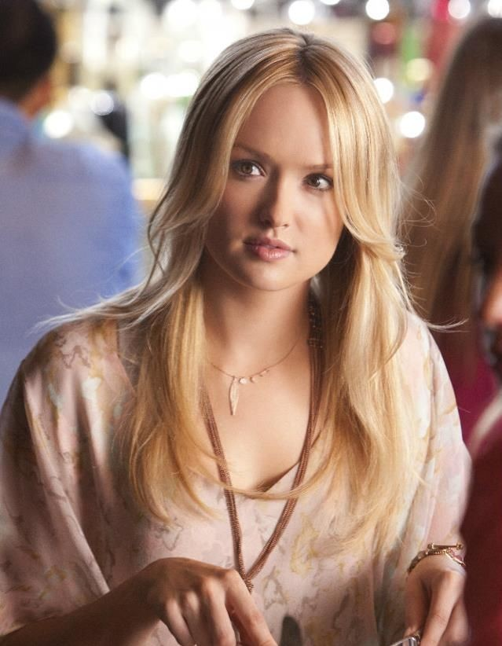
Ivy Dickens
Ivy
La impostora que cambia el destino de la familia van der Woodsen.
Kaylee DeFer